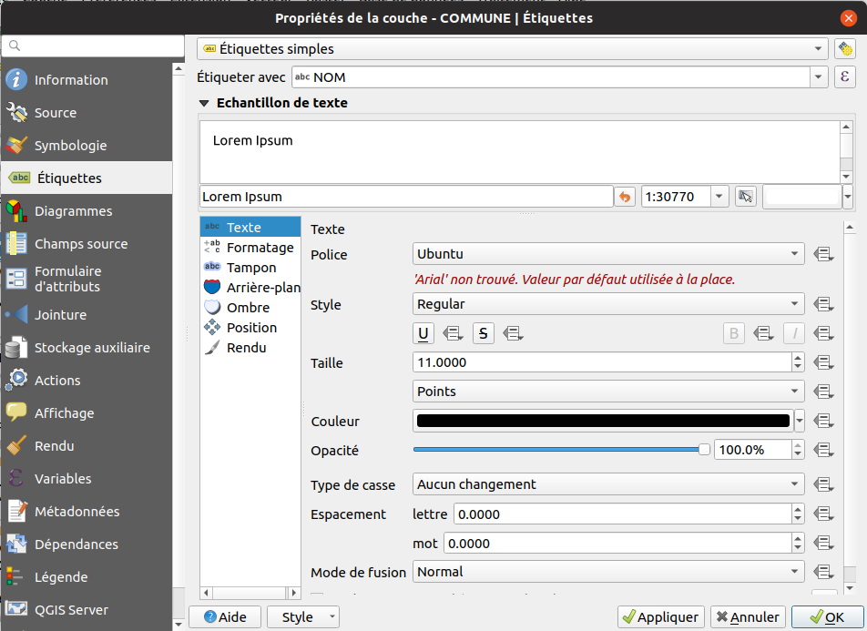

Cette formation concerne des utilisateurs ayant des connaissance en SIG et qui souhaitent apprendre à utiliser QGIS :
Nous allons réaliser une carte communale présentant :
Le PDF devra contenir :
Pour suivre la formation, il faut:

plus
dans la barre d'outil ci-dessus
Source de données
, ajoutons une couche
Vecteur
de type
Fichier
.
201909_11_ILE_DE_FRANCE_SHP_L93_2154 / H_OSM_ADMINISTRATIF / COMMUNE.shp
Projet
->
Enregistrer sous...
et mettez le
à côté
du dossier
201909_11_ILE_DE_FRANCE_SHP_L93_2154
.
Explorateur
, dans
Dossier du projet
:
D_OSM_HYDROGRAPHIE
,
RESERVOIR_EAU.shp
A_OSM_RESEAU_ROUTIER
,
ROUTE.shp

Identifier les entités
dans la barre d'outils, faire un clic sur une entité.
table attributaire
.
Utilisons l'icône avec un carré jaune et un epsilon (le
ε
) afin de construire une expression de sélection.
On souhaite pouvoir sélectionner le(s) entité(s) qui répondent au critère
"CODE_INSEE" = '77251'
, pour cela utiliser
l'interface graphique afin de construire la requête. Que remarquons-nous sur la structure de l'expression ?
""
''
.
77
à l'aide de l'opérateur
like
:
"CODE_INSEE" like '77%'
to_int
to_int( "POPUL" ) < 1000
Exporter
.
ESRI Shapefile
. On peut aussi choisir de faire une reprojection des données.
Attention , dans la fenêtre pour exporter les entités, toujours utiliser les trois petits points lors de la saisie du nom de fichier !

Propriétés
.
Symbologie
.
Le premier menu déroulant propose le type de symbologie :
Autoroute
,
National
,
Départemental
,
Communale
,
Piste forestière
.
symbole unique
Couleur de remplissage
, mettre transparent.
catégorisation
sur le champ
NATURE
classer
pour créer la classification
Symbole
ayant un fort trafic :
topo_main_road
Les étiquettes sont utilisées pour afficher du texte sur la carte : le nom des rues, afficher la superficie d'une commune etc.
Nous allons faire un étiquetage simple sur la couche
communes
:
Étiquettes
dans les propriétés de la couche vecteur :

Étiquettes simples
Étiquetter avec
le nom du champ que l'on souhaite afficher.
Définir des seuils de visibilités dans l'onglet
Rendu
.
Bonus , afficher une information calculée à la volée, comme la superficie de la commune en km² :
area
.
$area / 1000000
concat("NOM", ' ', round($area / 1000000, 2), ' km²')
Extraire par localisation
/
Sélection par localisation
afin de récupérer seulement les troncons de route qui
intersectent
la commune.
Mise en page
dans QGIS consiste faire une carte en respectant les règles cartographiques puis de faire un export PDF.
Projet
->
Nouvelle mise en page

Note
, si vous le souhaitez, vous pouvez ouvrir le projet
X_PROJET_V3.qgs.qgz
pour obtenir plusieurs couches avec une symbologie.
filtre bleu
dans l'onglet `élément de la légende (image ci-dessous)
Rechercher dans les répertoires
, dans ses propriétés, pour trouver une image adéquate)